건축설비기사 (2020-06-06 기출문제)
1과목: 건축일반
1. 도서관 열람실의 계획 시 유의사항 중 옳지 않은 것은?
- 실내ㆍ외의 소음을 차단할 수 있어야 한다.
- 타실과의 연결을 원활히 하기 위하여 중앙위치에서 통로 역할을 해야 한다.
- 서고 가까이에 위치하도록 한다.
- 채광을 적당히 받도록 하기 위해서 남향이 유리하다.
(정답률: 75%)

2. 리조트 호텔(Resort Hotel)의 입지 조건과 가장 거리가 먼 것은?
- 기후적인 쾌적도가 높을 것
- 조망 및 주변경관의 조건이 좋을 것
- 중심 상업지와 매우 근접할 것
- 관광지의 특성을 활용할 수 있는 위치일 것
(정답률: 88%)
3. 백화점에 설치하는 에스컬레이터에 관한 설명으로 옳지 않은 것은?
- 대량의 인원을 짧은 시간에 수송할 수 있다.
- 손님을 기다리게 하지 않고 종업원이 없어도 된다.
- 수송력에 비하여 점유 면적이 작다.
- 지하층에는 설치가 불가하다.
(정답률: 78%)
4. 종합병원 계획에 관한 설명으로 옳지 않은 것은?
- 수술실의 벽은 흰색으로 마감한다.
- 병동부가 가장 많은 면적을 차지하는 점을 감안하다.
- 병원의 규모는 병상수를 기준으로 산정한다.
- 간호사 대기소는 엘리베이터실에 인접하여 배치한다.
(정답률: 74%)
5. 학교 건축의 블록 플랜에서 클러스터형(cluster system)의 단점으로 옳지 않은 것은?
- 넓은 부지가 필요하다.
- 관리부의 동선이 길다.
- 운영비가 많이 소요된다.
- 전체 배치 계획에 융통성을 기대하기 어렵다.
(정답률: 79%)
6. 신축 공동주택의 실내공기질 권고기준에 포함되지 않는 물질은?
- 벤젠
- 폼알데하이드
- 오존
- 스티렌
(정답률: 72%)
7. 철근콘크리트구조에 관한 설명으로 옳지 않은 것은?
- 철근과 콘크리트의 열에 의한 선팽창계수는 거의 같다.
- 철근과 콘크리트의 부착력이 작다.
- 내구성과 내화성이 크다.
- 콘크리트는 철근이 녹스는 것을 방지한다.
(정답률: 80%)
8. 상점건축에서의 측면판매에 관한 설명으로 옳은 것은?
- 판매원이 정위치를 정하기가 용이하다.
- 포장대를 가릴 수 있고 포장 등이 편리하다.
- 양복, 침구, 전기기구, 서적, 운동용구점
- 고객과 종업원이 쇼 케이스(show case)를 가운데 두고 상담하는 방식이다.
(정답률: 67%)
9. 주택의 침실계획에 관한 설명으로 옳은 것은?
- 어린이 침실은 가급적 북쪽에 위치하는 것이 좋다.
- 부부침실에서 침대는 창쪽에 머리를 두지 않도록 배치하는 것이 좋다.
- 침실은 현관으로부터 가까이 있는 편이 좋다.
- 침실의 출입문은 안여닫이로 하지 않는 것이 좋다.
(정답률: 80%)
10. 원형 철근콘크리트 기둥에 나선철근의 역할과 가장 거리가 먼 것은?
- 기둥의 휨응력 보강
- 주근의 좌굴 방지
- 콘크리트가 수평으로 터져나가는 것을 구속
- 수평력에 의한 전단보강
(정답률: 39%)
11. 열환경 지표 중 기온과 주벽의 복사열 및 기류의 영향을 조합시킨 지표로서, 습도의 영향이 고려되어 있지 않은 것은?
- 작용온도
- 등온지수
- 유효온도
- 합성온도
(정답률: 54%)
12. 학교 교실의 음 환경에 관한 설명으로 옳지 않은 것은?
- 교실과 복도의 접촉면이 큰 평면이 소음을 막는데 유리하다.
- 소리를 잘 듣기 위해서는 적당한 잔향시간이 필요하다.
- 운동장에서의 소음은 배치계획으로 이를 방지할 수 있다.
- 교실의 천장 및 뒷벽의 다양한 마감재료에 따라 실내음향성능은 다르게 나타날 수 있다.
(정답률: 78%)
13. 철골집합부 중 고력볼트 접합의 장점으로 거리가 먼 것은?
- 응력의 전달이 확실하다.
- 품질 검사가 용이하다.
- 시공이 간편하다.
- 강재의 양을 절약한다.
(정답률: 66%)
14. 사무소의 공간계획에 있어서 바닥 면적이 큰 초고층 사무소에 가장 적합한 코어 형태는?
- 편심코어형
- 독립코어형
- 중심코어형
- 양단코어형
(정답률: 77%)
15. 목구조 접합에 관한 설명으로 옳지 않은 것은?
- 이음과 맞춤은 응력이 작은 곳에서 한다.
- 이음과 맞춤은 공작이 간단한 것이 좋다.
- 이음과 맞춤을 정확히 가공하여 서로 밀착되도록 한다.
- 이음과 맞춤의 단면은 응력의 방향과 일치하도록 하여 응력을 균등하게 전달시킨다.
(정답률: 57%)
16. 열의 이동에 관한 설명으로 옳지 않은 것은?
- 유체를 사이에 두고 양쪽의 고체사이에 열이 이동하는 현상을 열관류라 한다.
- 복사는 열이 고온의 몸체표면으로부터 저온의 물체표면으로 공간을 통하여 전달되는 현상이다.
- 열전도는 열에너지가 주로 고체 속을 고온부에서 저온부로 이동하는 현상이다.
- 물체 내부 열전도로 전달되는 열량은 전열면적, 온도차, 시간에 비례한다.
(정답률: 61%)
17. 건축의 생산수단으로서 사용되는 치수조정(modular coordination)의 장점이 아닌 것은?
- 설계 작업이 단순해진다.
- 공사기간을 단축할 수 있다.
- 대량생산이 용이하여 생산비용이 절감된다.
- 치수비가 황금비로 되어 다양한 형태의 설계가 가능하다.
(정답률: 84%)
18. 아파트 건축의 각 평면형식에 관한 설명으로 옳지 않은 것은?
- 편복도형은 공용복도에 있어서는 프라이버스가 침해되기 쉽다.
- 집중형은 채광조건이 양호하며 각 세대의 환경조건이 균일하다.
- 중복도형은 대지에 대해서 건물이용도가 높다.
- 홀형은 통행과 프라이버시가 양호하다.
(정답률: 65%)
19. 벽돌벽에서 발생하는 균열의 주용원인으로 볼 수 없는 것은?
- 벽돌 및 모르타르의 강도 부족
- 벽돌벽의 부분적 시공결함
- 기초의 부동침하
- 상하층 개구부의 동일선상 위치로 인한 하중집중
(정답률: 60%)
20. 도서관의 출납시스템 중 열람자는 직접서가에 면하여 책의 체제나 표지 정도는 볼 수 있으나 내용을 보려면 관원에게 요구하여 대출기록을 남긴 후 열람하는 형식은?
- 자유개가식
- 안전개가식
- 반개가식
- 폐가식
(정답률: 65%)
2과목: 위생설비
21. 길이 50m, 내경 25mm인 직선 배관에 물이 2m/s의 속도로 흐르고 있다. 관마찰계수가 0.03일 때 마찰저항손실은?
- 12.24Pa
- 1224kPa
- 120Pa
- 120kPa
(정답률: 45%)
22. 통기관의 최소 관경에 관한 설명으로 옳지 않은 것은?
- 각개통기관은 그것이 접속되는 배수관 관경의 1/2 이상으로 한다.
- 결합통기관은 통기수직관과 배수수직관 중 작은 쪽의 관경 이상으로 한다.
- 도피통기관은 배수수평지관의 관경 이상으로 하되 최소 75mm 이상으로 한다.
- 루프통기관은 배수수평지관과 통기수직관 중 작은 쪽 관경의 1/2 이상으로 한다.
(정답률: 59%)
23. 청소구에 관한 설명으로 옳지 않은 것은?
- 배수수평지관 및 배수수평주관의 기점에 설치한다.
- 배수의 흐름과 반대 또는 직각방향으로 열 수 있도록 설치한다.
- 배수관이 45°를 넘는 각도에서 방향을 전환하는 개소에 설치한다.
- 배수관경이 125mm 이면 직경이 125mm인 청소구를 설치하여야 한다.
(정답률: 62%)
24. 급탕배관에 관한 설명으로 옳지 않은 것은?
- 급탕관의 최상부에는 공기빼기 장치를 설치한다.
- 중앙식 급탕설비는 원칙적으로 강제순환방식으로 한다.
- 상향배관인 경우 급탕관은 하향구배, 반탕관은 상향구배로 한다.
- 관의 신축을 고려하여 건물의 벽 관통부분의 배관에는 슬리브를 끼운다.
(정답률: 74%)
25. 급탕배관 내에 흐르는 유체의 온도변화로 인하여 발생하는 관의 신축을 흡수할 목적으로 사용되는 신축이음쇠에 속하는 것은?
- 레듀서
- 소켓이음
- 스트레이너
- 스위블 조인트
(정답률: 76%)
26. 급수관 내에 공기실(Air chamber)을 설치하는 이유는?
- 배관의 신축을 위해서
- 수압시험을 하기 위해서
- 누출시험을 하기 위해서
- 수격작용의 방지를 위해서
(정답률: 75%)
27. 게이트 밸브(Gate valve)에 관한 설명으로 옳은 것은?
- 슬루스 밸브라도로 하며 유체의 흐름을 완전 개폐하는데 사용된다.
- 유체를 일정한 방향으로만 흐르고 하고 역류를 방지하는데 주로 사용된다.
- 수평배관에만 사용되며 핸들을 90° 회전시키면 볼이 회전하여 완전 개폐가 가능하다.
- 밸브를 완전히 열 경우 단면적이 갑자기 작아지므로 유체에 대한 마찰저항이 크다.
(정답률: 72%)
28. 다음 중 통기관의 설치 목적과 가장 거리가 먼 것은?
- 배수계통내의 배수 및 공기의 흐름을 원활히 한다.
- 배수관 계통의 환기를 도모하여 관내를 청결하게 유지한다.
- 사이폰 작용 및 배압에 의해서 트랩봉수가 파괴되는 것을 방지한다.
- 배수트랩의 봉수부에 가해지는 압력과 배수관 내의 압력차를 크게 하여 배수작용을 돕는다.
(정답률: 63%)
29. 급수방식에 관한 설명으로 옳지 않은 것은?
- 수도직결방식은 급수압력이 일정하다.
- 펌프직송방식은 저수조의 수질관리가 필요하다.
- 압력수조방식은 단수 시에 일정량의 급수가 가능하다.
- 고가수조방식은 저수시간이 길어지면 수질이 나빠지기 쉽다.
(정답률: 57%)
30. 매시간 15m3의 물을 고가수조에 공급하고자 할 때 양수펌프에 요구되는 축동력은? (단, 펌프의 전양정 33m, 펌프의 효율 45%)
- 1kW
- 1.5kW
- 2kW
- 3kW
(정답률: 58%)
31. 중앙식 급탕, 방법 중 간접가열식에 관한 설명으로 옳지 않은 것은?
- 대규모 급탕설비에 적합하다.
- 고압보일러를 설치하여야 한다.
- 보일러를 난방설비와 겸용할 수 있다.
- 저탕조에는 온도조절장치(thermostat)를 설치하여 온도를 조절한다.
(정답률: 68%)
32. 고가수조방식의 건물에서 최상층에 세정밸브식 대변기가 설치되어 있다. 이 세정밸브의 사용을 위해 필요한 세정밸브로부터 고가수조 저수면까지의 최소 높이는? (단, 고가수조에서 세정밸브까지의 총 배관 길이는 15m이고, 마찰손실수두는 5mAq, 세정밸의 필요압력은 70kPa이다.)
- 약 5m
- 약 7m
- 약 12m
- 약 27m
(정답률: 41%)
33. 레스토랑의 주방 등에서 배출되는 지방분 등이 배수관에 유입되는 것을 막기 위하여 사용되는 포집기는?
- 샌드 포집기
- 그리스 포집기
- 가솔린 포집기
- 플라스터 포집기
(정답률: 76%)
34. 급배수설비의 기본 원칙으로 옳지 않은 것은?
- 우수는 공공하수도에 배수하지 않도록 한다.
- 상수의 급수계통은 크로스 커넥션이 되어서는 안된다.
- 탱크 및 배수계통에는 통기관 등과 같은 적절 한 통기 조치를 한다.
- 급수계통은 역류나 역사이펀 작용의 위험이 생기지 않도록 한다.
(정답률: 68%)
35. 급탕배관방식 중 헤더방식에 관한 설명으로 옳지 않은 것은?
- 지관을 소구경의 배관으로 할 수 있다.
- 슬리브, 공법을 채용하면 배관의 교환이 용이하다.
- 헤더로 부터의 지관 도중에 관이음 시공부가 많아야 한다.
- 한 계통마다 관로의 보유수량이 적어 급탕 대기시간을 단축할 수 있다.
(정답률: 68%)
36. 다음 중 고층건물에서 급수조닝을 하지 않을 경우 생길 수 있는 현상과 가장 거리가 먼 것은?
- 수격작용 발생
- 크로스 커넥션 발생
- 물 흐르는 소리에 의한 소음 발생
- 배관이나 기구에 큰 압력이 가해져 배관과 기구의 수명 단축
(정답률: 64%)
37. 급탕탱크(저탕조)내에 1000L의 물을 10℃에서 80℃로 온도를 높였을 때 체적 증가량은? (단, 물의 밀도는 10℃에서는 0.99973kg/L, 80℃에서는 0.9718kg/L이다.)
- 29L
- 40L
- 55L
- 37L
(정답률: 51%)
38. 정화조에서 유입수의 BOD가 150mg/L, 유출수의 BOD가 60mg/L일 때, 이 정화조의 BOD 제거율은?
- 30%
- 45%
- 60%
- 90%
(정답률: 77%)
39. 강관 이음류 중 부싱(Bushing)의 용도로 옳은 것은?
- 배관의 말단부
- 관을 분기할 때
- 배관을 90℃로 구부릴 때
- 구경이 다른 관을 접속하고자 할 때
(정답률: 64%)
40. 위생기구의 재질 중 위생도기에 관한 설명으로 옳지 않은 것은?
- 흡수성이 크다.
- 강도가 커서 내구력이 있다.
- 오물이 부착되기 어려우며, 청소가 용이하다.
- 복잡한 구조의 것을 일체화 하여 제작할 수 있다.
(정답률: 74%)
3과목: 공기조화설비
41. 습공기의 엔탈피(enthalpy)를 설명한 것으로 옳은 것은?
- 습공기가 갖는 현열량
- 습공기가 갖는 현열량과 잠열량의 합계
- 습공기가 갖는 현열량을 전열량으로 나눈 값
- 습공기가 갖는 현열량을 현열량으로 나눈 값
(정답률: 66%)
42. 덕트 내의 풍속이 20m/s, 정압이 200Pa일 경우 전압의 크기는? (단, 공기의 밀도는 1.2kg/m3)이다.)
- 212Pa
- 220Pa
- 330Pa
- 440Pa
(정답률: 54%)
43. 흡수식 냉동기의 구성요소 중 용액으로부터 냉매인 수증기와 흡수제인 LiBr로 분리시키는 작용을 하는 곳은?
- 증발기
- 응축기
- 발생기
- 흡수기
(정답률: 42%)
44. 다음 중 냉각수 배관재료로 가장 부적절한 것은?
- 동관
- 아연도강관
- 스테인리스관
- 경질염화비닐관
(정답률: 69%)
45. 취출풍량 360m3/h, 취출구 풍속 3.5m/s 개구율 0.7인 취출구의 면적은?
- 0.03m2
- 0.04m2
- 0.⑤m2
- 0.06m2
(정답률: 42%)
46. 보일러 주위 배관 중 하드포트 접속법에 관한 설명으로 옳은 것은?
- 배관이 온도변화에 의해 늘어나고 줄어드는 것을 흡수하기 위해 사용된다.
- 진공환수식에서 환수관보다 방열기가 낮은 위치에 있을 때 응축수를 끌어올리기 위해 사용된다.
- 저압보일러에서 중력환수방식일 경우 환수관의 일부가 파손되었을 때 보일러수의 유실을 방지하기 위해 사용된다.
- 열교환에 의해 생긴 응축수와 증기에 혼입되어 있는 공기를 배출하여 열교환기의 가열작용을 유지하기 위해 사용된다.
(정답률: 49%)
47. 건구온도 26℃인 습공기 1000m3/h를 14℃로 냉각시키는데 필요한 열량은? (단, 현열만에 의한 냉각이며, 공기의 정압비열은 1.01kJ/kgㆍK, 공기의 밀도는 1.2kg/m3)이다.
- 약 2kW
- 약 3kW
- 약 4kW
- 약 5kW
(정답률: 50%)
48. 냉방부하 계산 시 인체로부터의 취득열량을 계산한다. 다음 공간 중 인체 1인으로부터의 취득열량이 상대적으로 가장 많은 장소는?
- 극장
- 은행
- 사무소
- 볼링장
(정답률: 68%)
49. 다음 중 펌프운전에서 캐비테이션이 발생하기 쉬운 조건과 가장 거리가 먼 것은?
- 흡입 양정이 클 경우
- 유체의 온도가 높을 경우
- 펌프가 흡입수면보다 위에 있을 경우
- 흡입측 배관의 손실수두가 작을 경우
(정답률: 58%)
50. 그림과 같은 전열교환기의 전열효율(η)을 올바르게 나타낸 것은? (단, 난방의 경우이며, X1, X2, X3, X4는 각 공기상태의 엔탈피를 나타낸다.
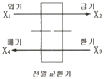
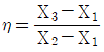
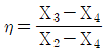
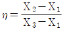
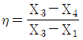
(정답률: 64%)
51. 공조기내에서 습공기가 다음 그림과 같이 상태 변화를 할 때 변화과정으로 옳은 것은?
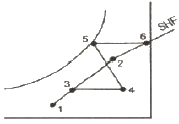
- 혼합-예열-가습-재열
- 혼합-가습-가열-재열
- 혼합-냉각-가열-가습
- 혼합-혼합-가열-가습
(정답률: 52%)
52. 다음 중 온도 조절식 증기트랩에 속하는 것은?
- 버킷 트랩
- 드럼 트랩
- 플로트 트랩
- 벨로즈 트랩
(정답률: 60%)
53. 냉동기를 냉각목적으로 할 경우의 성적계수를 COPC, 가열목적 증, 히트 펌프로 사용 될 경우의 성적계수를 COPH라 할 때, 두 성적계수의 관계를 바르게 나타낸 것은?
- COPH+COPC=1
- COPH+1=COPC
- COPH-COPC=1
- COPC/COPH=1
(정답률: 49%)
54. 빙축열 등을 이용하는 축열 시스템에 관한 설명으로 옳지 않은 것은?
- 열손실이 줄어든다.
- 운전비를 줄일 수 있다.
- 심야전력을 이용할 수 있다.
- 주간 파크 시간대에 전력부하를 절감할 수 있다.
(정답률: 56%)
55. 냉방부하 중 일사에 의한 유리로부터의 취득 열량에 관한 설명으로 옳지 않은 것은?
- 현열로만 구성되어 있다.
- 유리창의 범위에 따라 다르다.
- 유리창의 차폐계수가 클수록 취득열량은 크다.
- 북쪽 창은 햇빛이 닿지 않으므로 일사에 의한 취득열량은 생기지 않는다.
(정답률: 65%)
56. 취출기류의 속도분포와 관련하여 4단계의 영역으로 구분할 경우, 제2영역에 관한 설명으로 옳은 것은?
- 일명 천이구역이라고도 한다.
- 취출기류의 속도 변화가 없는 영역이다.
- 취출거리의 대부분을 차지하며 취출구의 종류에 따라 특성이 현저하다.
- 취출기류의 속도가 급격히 감소되어 혼합된 공기(1차공기+2차공기)까지도 주위로 환산되는 영역이다.
(정답률: 57%)
57. 다음과 같은 조건에서 실내 CO2의 허용농도를 1000ppm으로 할 때, 필요 환기량은?
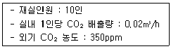
- 249.2m3/h
- 275.4m3/h
- 307.7m3/h
- 356B m3/h
(정답률: 60%)
58. 습공기를 냉각하였을 경우 상태 변화 내용으로 올은 것은?
- 비체적은 감소한다.
- 엔탈피는 증가한다.
- 건구온도는 변화없다.
- 습구온는 높아진다.
(정답률: 48%)
59. 건구온도 20℃ 절대습도 0.015kg/kg' 인 습공기 6kg의 엔탈피는? (단, 공기의 정압비열=1.01kJ/kgㆍK, 수증기 정압비열=1.85kJ/kgㆍK, 0℃에서 포화수의 증발잠열 2501kJ/kg)
- 58.24kJ
- 120.67kJ
- 228.77kJ
- 349.62kJ
(정답률: 42%)
60. 증기난방에 관한 설명으로 옳은 것은?
- 온수난방에 비하여 열용량이 커 예열시간이 길게 소요된다.
- 온수난방에 비하여 부하변동에 따른 방열량 조절이 곤란하다.
- 온수난방에 비하여 한랭지에서 운전정지 중에 동결의 위험이 크다.
- 온수난방에 비하여 소요방열면적과 배관경이 크게 되므로 설비비가 높다.
(정답률: 60%)
4과목: 소방 및 전기설비
61. 3상 Y결선에서 선간전압이 200(V)인 3상 교류의 상전압은?
- 115(V)
- 346(V)
- 453(V)
- 600(V)
(정답률: 50%)
62. 도선의 길이를 10배, 단면적을 5배로 하면 전기저항의 크기는 몇 배로 되는가?
- 1배
- 2배
- 3배
- 5배
(정답률: 68%)
63. 다음 중 3상유도전동기의 회전속도를 증가시킬 수 있는 방법으로 가장 알맞은 것은?
- 극수를 증가시킨다.
- 슬립을 증가킨다.
- 주파수를 증가킨다.
- 기동법을 변화시킨다.
(정답률: 55%)
64. 다음과 같은 조건에 서 가로 40m, 세로 30m인 사무실의 평균조도를 400(lx)로 하기 위해 필요한 형광등의 개수는?
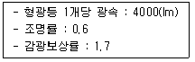
- 240개
- 260개
- 280개
- 340개
(정답률: 47%)
65. 스프링클러설비의 배관 중 스프링클러헤드가 설치되어 있는 배관을 의미하는 것은?
- 주배관
- 교차배관
- 가지배관
- 급수배관
(정답률: 72%)
66. 보호계전기의 종류에 속하지 않는 것은?
- 방향 계전기
- 과전류 계전기
- 부족 전압 계전기
- 갭 저항형 계전기
(정답률: 48%)
67. 교류의 크기를 표현하는데 사용되는 용어에 속하지 않는 것은?
- 평균값
- 실효값
- 순시값
- 정상값
(정답률: 59%)
68. 직ㆍ병렬 전기회로에 관한 설명으로 옳지 않은 것은?
- 직렬회로에서는 각 저항에 흐르는 전류는 같다.
- 직렬회로에서 총저항은 접속되어 있는 모든 저항을 합한 것이다.
- 저항의 병렬회로보다 저항의 직렬회로에서 전압강하가 적어진다.
- 병렬회로에서 각 저항에서의 전압강하는 저항의 크기와 관계없이 모두 같다.
(정답률: 50%)
69. 다음 중 정풍량 방식에서 냉난방 밸브의 제어기준이 되는 현재 실내의 온ㆍ습도를 측정하는 검출기의 설치 위치로 가장 적정한 것은?
- 외기측
- 급기측
- 환기측
- 혼합기측
(정답률: 61%)
70. 다음은 옥외소화전설비의 옥외소화전함 설치에 관한 기준 내용이다. ()안에 알맞은 것은?
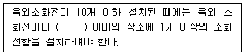
- 5m
- 10m
- 15m
- 20m
(정답률: 50%)
71. 연결살수설비의 송수구에 관한 기준 내용으로 옳지 않은 것은?
- 송수구는 구경 32mm의 쌍구형으로 설치 하여야 한다.
- 지면으로부터 높이가 0.5m 이상 1.0m 이하의 위치에 설치하여야 한다.
- 소방차가 쉽게 접근할 수 있고 노출된 장소에 설치하는 것이 원칙이다.
- 개방형 헤드를 사용하는 송수구의 호스접걸 구는 각 송수구역마다 설치하는 것이 원칙이다.
(정답률: 69%)
72. 스프링클러설비의 화재안전기준 상 다음과 같이 정의 되는 용어는?
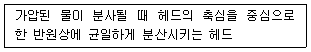
- 조기반응형헤드
- 측벽형스프링클러헤드
- 개방형스프링클러헤드
- 폐쇄형스프링클러헤드
(정답률: 59%)
73. 자동화재탐지설비의 수신기에 설치에 관한 설명으로 옳지 않은 것은?
- 수위실 등 상시 사람이 근무하는 장소에 설치하는 것이 원칙이다.
- 수신기의 조작스위치는 바닥으로부터 높이가 1.5m 이상 2.0 이하인 장소에 설치하여야 한다.
- 수신기는 감지기ㆍ중계기 또는 발신기가 작동하는 경계구역을 표시할 수 있는 것으로 하여야 한다.
- 수신기의 음향기구는 그 음량 및 음색이 다른 기기의 소음 등과 명확히 구별될 수 있는 것으로 하여야 한다.
(정답률: 66%)
74. 금속관 배선공사에 관한 설명으로 옳지 않은 것은?
- 외부에 대한 고조파의 영향이 없다.
- 사용 목적에 따라 적합한 접지가 필요하다.
- 외부적 응력에 대해 전선보호의 신뢰성이 높다.
- 옥내의 습기가 많은 은폐장소에서는 사용이 불가능하다.
(정답률: 53%)
75. 다음은 옥내소화전설비의 방수구에 관한 기준내용이다. ()안에 알맞은 것은?
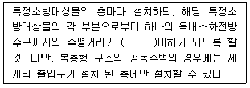
- 10m
- 15m
- 20m
- 25m
(정답률: 46%)
76. 건축화 조명방식 중 천장면에 유리, 플라스틱등과 같은 확산용 스크린판을 붙이고 천장 내부에 광원을 배치하여 천장을 건축화된 조명기구로 활용하는 방식은?
- 코브조명
- 밸런스조명
- 광천장조명
- 코니스조명
(정답률: 63%)
77. 시퀀스(Sequence) 제어에 관한 설명으로 옳은 것은?
- 시퀀스 제어는 일명 피드백(Feedback) 제어라고도 한다.
- 시퀀스 제어계의 신호처리 방식은 유접점 방식만 있다.
- 미리 정해진 순서에 따라 제어의 각 단계를 순차적으로 제어한다.
- 시퀀스 제어 회로의 주전원과 조작전원은 반드시 동일해야 한다.
(정답률: 63%)
78. 200(V), 1(kW)의 전열기를 100(V)의 전압으로 사용할 때 소비되는 전력(W)은?
- 100
- 200
- 250
- 500
(정답률: 37%)
79. 정전용량이 C1, C2인 두 콘덴서를 직렬로 연결한 회로에 전압 V를 인가할 경우 C1에 걸리는 전압은?
- (C1+C2)V
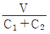
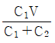
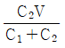
(정답률: 52%)
80. 변압기의 전부하 시의 2차 전압이 100(V), 무부하 시의 2차 전압이 102(V)이라면 전압 변동률은?
- 1.96%
- 2%
- 2.04%
- 4%
(정답률: 61%)
5과목: 건축설비관계법규
81. 건축법령상 리모델링이 쉬운 구조에 속하지 않는 것은? (단, 공동주택의 경우)
- 구조체에서 건축설비, 내부 마감재료 및 외부 마감재료를 분리할 수 있을 것
- 개별 세대 안에서 구획된 실의 크기, 개수 또는 위치 등을 변경할 수 있을 것
- 각 층에 시공된 보, 기둥 등의 구조부재의 개수 또는 위치를 변경할 수 있을 것
- 각 세대는 인접한 세대와 수직 또는 수평 방향으로 통합하거나 분할할 수 있을 것
(정답률: 66%)
82. 건축물의 에너지절약 설계기준에서는 수영장에 자연채광을 위한 개구부 설치를 권장하고 있다. 다음 중 권장 개구부 면적의 합계에 관한 기준 내용으로 옳은 것은?
- 수영장 바닥면적의 5분의 1 이상
- 수영장 바닥면적의 7분의 1 이상
- 수영장 바닥면적의 10분의 1 이상
- 수영장 바닥면적의 20분의 1 이상
(정답률: 49%)
83. 용도변경과 관련된 시설군 중 문화집회시설군에 속하는 건축물의 용도가 아닌 것은?
- 종교시설
- 수련시설
- 위락시설
- 관광휴게시설
(정답률: 47%)
84. 같은 건축물 안에 공동주택과 위락시설을 함께 설치하고자 하는 경우, 공동주택의 출입구와 위락시설의 출입구는 서로 그 보행거리가 최소 얼마 이상이 되도록 설치하여야 하는가?
- 10m
- 20m
- 30m
- 50m
(정답률: 54%)
85. 건축법령상 다음과 같이 정의되는 것은?
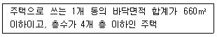
- 아파트
- 연립주택
- 다세대주택
- 다가구주택
(정답률: 56%)
86. 다음은 초고층 건축물에 설치하는 피난안전구역에 관한 기준 니용이다. ()안에 알맞은 것은?
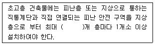
- 10
- 20
- 30
- 40
(정답률: 62%)
87. 다음의 소방시설 중 경보설비에 속하지 않는 것은?
- 누전경보기
- 비상방송설비
- 무선통신보조설비
- 자동화재탐지설비
(정답률: 65%)
88. 건축물에 설치하는 지하층의 구조 및 설비에 관한 기준 내용으로 옳지 않은 것은?
- 거실의 바닥면적의 합계가 1000m2 이상인 층에는 환기설비를 할 것
- 지하층의 바닥면적이 300m2 이상인 층에는 식수공급을 위한 급수전을 1개소 이상 설치할 것
- 거실의 바닥면적이 30m2 이상인 층에는 직통 계단외에 피난층 또는 지상으로 통하는 비상 탈출구 및 환기통을 설치할 것
- 바닥면적이 1000m2 이상인 층에는 피난층 또는 지상으로 봉하는 직통계단을 방화구획으로 구획되는 각 부분마다 1개소 이상 설치할 것
(정답률: 56%)
89. 상업지역 및 주거지역에서 건축물에 설치하는 냉방시설 및 환기시설의 배기구는 도로면으로부터 최소 얼마 이상의 높이에 설치하여야 하는가?
- 1m
- 1.5m
- 1.8m
- 2m
(정답률: 67%)
90. 다음 중 건축물의 관람실 또는 집회실로서 그 바닥면적이 200m2 이상인 것의 반자의 높이를 4m 이상으로 하여야 하는 건축물은? (단, 기계 환기장치를 설치하지 않은 경우)
- 종교시설의 용도에 쓰이는 건축물
- 공동주택 중 아파트의 용도에 쓰이는 건축물
- 문화 집 집회시설 중 전시장의 용도에 쓰이는 건축물
- 문화 및 집회시설 중 동물원의 용도에 쓰이는 건축물
(정답률: 49%)
91. 건축물에 급수ㆍ배수ㆍ환기ㆍ난방설비를 설치하는 경우, 건축기계설비기술사 또는 공조냉동 기계기술사의 협력을 받아야 하는 대상 건축물에 속하지 않는 것은? (단, 연면적 10000m2 미만인 건축물의 경우)
- 아파트
- 업무시설로서 해당 용도에 사용되는 바닥면적의 합계가 2000m2인 건축물
- 의료시설로서 해당 용도에 사용되는 바닥면적의 합계가 2000m2인 건축물
- 숙박시설로서 해당 용도에 사용되는 바닥면적의 합계가 2000m2인 건축물
(정답률: 54%)
92. 6층 이상의 거실면적의 합계가 11000m2인 교육연구시설에 설치하여야 하는 승용승강기의 최소 대수는? (단, 8인승 승용승강기인 경우)
- 3대
- 4대
- 5대
- 6대
(정답률: 35%)
93. 특정소방대상물이 판매시설인 경우, 모든 층에 스프링클러설비를 설치하여야 하는 수용인원 기준은?
- 100명 이상
- 200명 이상
- 500명 이상
- 1000명 이상
(정답률: 44%)
94. 다음 중 다중이용건축물에 속하지 않는 것은? (단, 16층 미만인 건축물)
- 종교시설로 쓰는 바닥면적의 합계가 50000m2이상인 건축물
- 판매시설로 쓰는 바닥면적의 합계가 50000m2이상인 건축물
- 업무시설로 쓰는 바닥면적의 합계가 50000m2이상인 건축물
- 의료시설 중 종합병원으로 쓰는 바닥면적의 합계가 50000m2이상인 건축물
(정답률: 64%)
95. 화재안전기준에 따라 소화기구를 설치하여야 하는 특정소방대상물의 연면적 기준은?
- 10m2 이상
- 25m2 이상
- 33m2 이상
- 45m2 이상
(정답률: 60%)
96. 다음은 건축물의 에너지절약 설계기준에 따른 용어의 정의이다. ()안에 알맞은 것은?
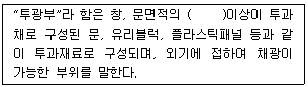
- 50%
- 60%
- 70%
- 80%
(정답률: 53%)
97. 건축물의 출입구에 설치하는 회전문은 계단이나 에스컬레이터로부터 최소 얼마 이상의 거리를 두어야 하는가?
- 1m
- 2m
- 3m
- 4m
(정답률: 63%)
98. 연면적 200m2를 초과하는 공동주택에 설치하는 복도의 유효너비는 최소 얼마 이상으로 하여야 하는가? (단, 양옆에 거실이 있는 복도의 경우)
- 1.2m
- 1.6m
- 1.8m
- 2.4m
(정답률: 51%)
99. 건축허가 시 미리 소방본부장 또는 소방서장의 동의를 받아야 하는 건축물의 연면적 기준은? (단, 건축물이 노유자시설인 경우)
- 100m2 이상
- 200m2 이상
- 300m2 이상
- 400m2 이상
(정답률: 34%)
100. 건축물의 옥상에 헬리포트를 설치하거나 헬리콥터를 통하여 인명 등을 구조할 수 있는 공간을 확보하여야 하는 대상 건축물 기준으로 옳은 것은? (단, 층수가 11층 이상인 건축물로서 건축물의 지붕을 평지붕으로 하는 경우)
- 11층 이상인 층의 바닥면적의 합계가 3000m2이상인 건축물
- 11층 이상인 층의 바닥면적의 합계가 5000m2이상인 건축물
- 11층 이상인 층의 바닥면적의 합계가 8000m2이상인 건축물
- 11층 이상인 층의 바닥면적의 합계가 10000m2이상인 건축물
(정답률: 61%)